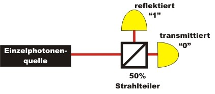

Zufall in der Quantenwelt
Übersicht
Zufall ist ein grundlegendes Phänomen in der Quantenphysik. Der Quantenzufall war 1926 schon Albert Einstein aus theoretischen Überlegungen bekannt. Er hatte an dieser absoluten Zufälligkeit jedoch starke Zweifel, die er in seinem berühmten Zitat "Der Alte würfelt nicht" [Ein26] äußerte. Im Experiment "Existenz des Photons"' zeigte sich, dass ein einzelnes Photon am Strahlteiler entweder reflektiert oder transmittiert wird und sich niemals teilt. Welchen Weg das einzelne Photon nimmt, kann nicht vorhergesagt werden. Der Quantenzufallsgenerator ist somit eine Anwendung des Grundlagenexperimentes zur Existenz des Photons aus dem Bereich der Quanteninformation. Auf der folgenden Seite gibt es zum Quantenzufallsgenerator folgende Zugänge und Anwendungen:

Quantenzufallsgenerator mit einzelnen Photonen